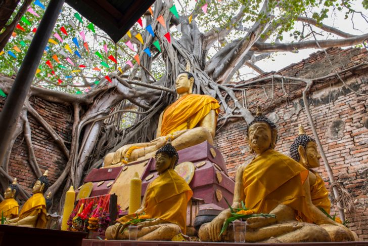

5 PLACES
1.) “วัดพระนอนจักรสีห์วรวิหาร” พระอารามหลวงชั้นตรีที่มีเรื่องเล่าสืบทอดต่อกันว่าหลวงพ่อพระนอนจักรสีห์คือรูปของพระพุทธเจ้าปางไสยาสน์ขณะเทศนาปาฏิหาริ์ยแก่อสุรินทราหู ผู้เป็นยักษ์ จึงต้องเนรมิตกายให้มีขนาดใหญ่กว่ายักษ์จนกลายเป็นพระพุทธรูปที่ใหญ่และยาวที่สุด

2.) “โบสถ์วัดไทร” ซึ่งรากของต้นโพธิ์และต้นไทรโอบยึดกำแพงโบสถ์ สถานที่ประดิษฐานองค์พระประธานไว้อย่างแน่นหนาและสวยงาม กลายเป็นหมุดยึดสำคัญที่ทำให้กำแพงอายุหลายร้อยปีไม่พังทลายลงมา ขณะที่ศาลาวัด ซึ่งมีอายุใกล้เคียงกันได้พังลงน้ำไปเป็นที่เรียบร้อย